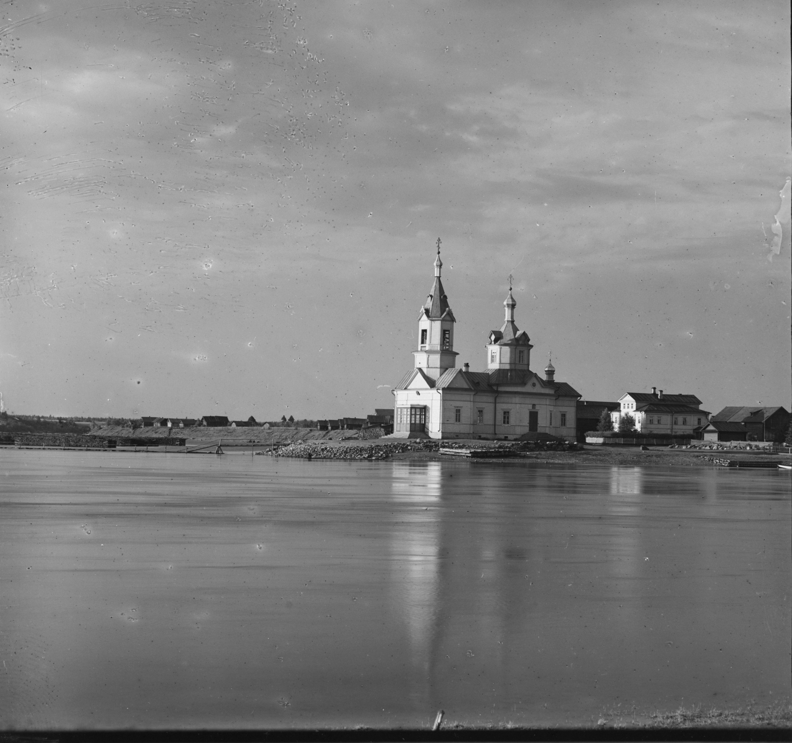
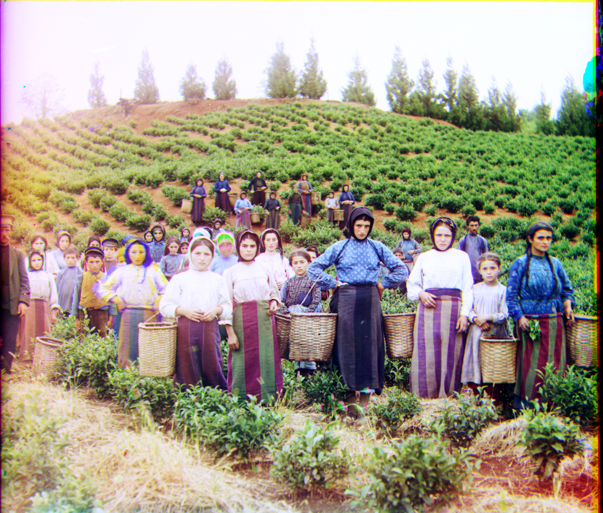

Images of the Russian Empire:
Colorizing the Prokudin-Gorskii photo collection



Overview
This project reconstructs color photographs from the digitized
Prokudin-Gorskii glass plates. Each plate contains three
vertically stacked grayscale exposures taken through blue, green, and red
filters. We extract these channels, align them with a simple (x, y)
translation model, and compose a single RGB image with minimal artifacts.
Step1: Automatic Cut
To colorize the images, we must first extract the three channels completely.
My chosen method is edge detection.
I start by applying Gaussian blur to reduce noise and ensure accurate edge extraction.
Then, I dilate the edges to obtain clearer boundaries, select the largest contour as the main outline,
and use it to extract the three color channels.
divide results
Step2: Automatic Aligning Images
The first method I used is NCC (Normalized Cross-Correlation).
The basic principle of NCC is to slide an image patch over another image,
compute the correlation at different positions,
and normalize the result so that it falls within the range (-1, 1).
A value closer to 1 indicates a higher degree of similarity between the two regions.
Compared to SSD (Sum of Squared Differences),
NCC not only considers pixel differences but is also more robust to variations in brightness and contrast,
which allows it to perform better under inconsistent lighting conditions.
Left: Siren in NCC; Right: Emir in NCC
It can be observed that the alignment result for the Emir photograph is not very satisfactory.
This is mainly due to significant brightness differences and the complexity of local structures,
which make traditional NCC matching vulnerable to interference.
To address this issue, I adopted an edge-based improvement:
first extracting the gradient changes in the horizontal and vertical directions,
and then performing NCC matching using pixel-wise gradient features.
By reducing the influence of brightness variations and emphasizing structural information,
this method achieves more accurate and stable alignment results.
Left: Siren in Edge-NCC; Right: Emir in Edge-NCC
Step3: Image Pyramid to Speed Up
The Image Pyramid is a multi-resolution image representation method that
generates a series of image levels from high to low resolution by repeatedly downsampling or
blurring the original image, forming a pyramid-like structure.
I mainly used the Gaussian Pyramid,
where each level is obtained by applying Gaussian blur followed by downsampling,
resulting in progressively lower-resolution images for multi-scale processing.
This allows the algorithm to perform coarse alignment or matching at lower resolutions and
then gradually refine the optimization at higher resolutions,
thereby improving both efficiency and robustness.
Setp4: Auto Contrast and White Balance
To make our photos appear more natural and realistic,
we can also apply white balance correction and enhance the contrast,
thereby improving the overall visual quality.
Left: Normal; Middle: Normal+White Balance Right:Normal+White Balance+Contrast Enhance


Results Gallery
Green channel offset: [ -41 , -13 ]
Green channel offset: [ -26 , 22 ]
Red channel offset: [ -7 , -4 ]
Red channel offset: [ 12 , 36 ]
Green channel offset: [ -23 , 17 ]
Green channel offset: [ -24 , -17 ]
Red channel offset: [ 25 , 23 ]
Red channel offset: [ 26 , -29 ]
Green channel offset: [ -11 , 13 ]
Green channel offset: [ -119 , 187 ]
Red channel offset: [ 46 , 9 ]
Red channel offset: [ -22 , 198 ]
return